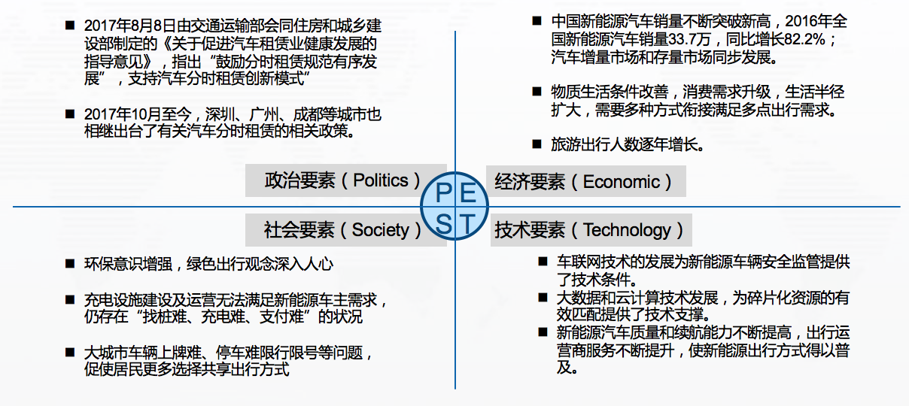
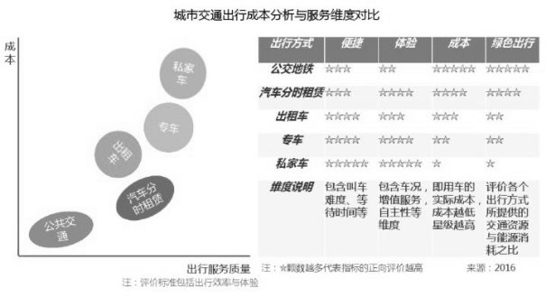
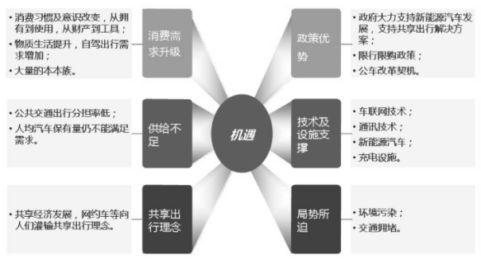
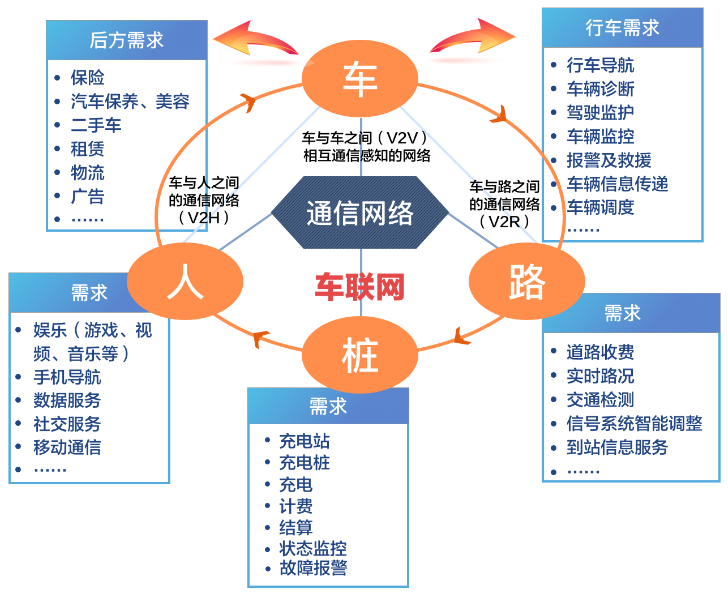

改革开放以来，中国城市发展扩张速度迅猛，许多城市在日渐繁荣发展过程中，交通问题也日益突出。一方面各大城市实行了车辆限购加上国内油价高企，使得运营车辆使用及维护成本居高不下；另一方面，私家车、桩、位资源利用率低，驾驶技能等资源无法得到有效利用，传统出租车行业监管及规范难度较大，进一步催生了“互联网+新能源出行”模式的诞生。
"互联网约租车”源自于“分享经济”的理念，1978
年的《美国行为科学家》杂志上，其背后的经济理念在于“人们需要的是产品的使用价值，而非产品本身”，是一个建立在人与物质资料分享基础上的社会经济生态系统。在这种“分享经济”下的车辆租赁模式中，过去只能作为私用的车辆，可以互助形式供社会分享。自上世纪40
年代以来，为应对城市交通拥堵、能源价格不断上涨的压力，北美地区就兴起了汽车共享的思潮。80
年代后，在石油危机的情形下，人们关注的焦点转移到能源短缺与空气质量，汽车共享进入第二轮发展。进入新世纪后，互联网技术逐渐应用到汽车共享方面，比如1999年，美国就出现了利用互联网进行供需信息发布及撮合的平台。我国在北京、上海、广州等城市也自发产生了“顺风车”、“拼车”等汽车共享形式。近年来，随着信息科技的不断发展，移动互联网技术为汽车共享提供了新的动力。2007
年以后出现了利用移动互联网技术开发的汽车共享平台，爱尔兰的 Avego，率先开发了专注合成撮合的汽车共享平台; Uber ( 优步) 2010 年开始提供约租车服务，影响逐步扩 大; 2013
年后，Sidecar、Lyft、Haxi
等一系列互联网汽车分享撮合平台公司相继成立。大多数欧美国家城市交通政策积极鼓励推动合乘和共享租赁，“互联网约租车”和“分时租赁”是“汽车共享”服务模式在移动互联网背景下的新发展。
分时租赁起源于 1948 年瑞士苏黎世合作社提出的 Car‐Sharing
方案，其理念为当合作社的某个会员用完车后，便将车钥匙交给下个使用者。随后，由于汽车电子技术及其他方面的限制，汽车共享项目一直在瑞士、德国、瑞典、荷兰、加拿大和美国这些发达国家缓慢发展。 直到 20
个世纪 90 年代，大批商业公司如 Autolib、City Car Club、Greenwheels、JustShareIt、 Stadtmobil、Zoom
以及 Zipcar 才纷纷涌现。2010 年以后，伴随电动汽车行业的成熟，分时租赁公司以纯电动汽车进行试探性经营，如戴姆勒的 Car2go 项目、宝马的 On
Demand 项目、 雷诺的 Twizy Way 和丰田的 CMOS，分别运用电动 Smart、Active E、Twizy 和 CMOS
等纯电动汽车进行实证研究，分时租赁项目开始逐渐为公众所熟知。
中共十八届中央委员会第五次全体会议提出“实现‘十三五’时期发展目标，破解发展难题，厚植发展优势，必须牢固树立并切实贯彻创新、协调、绿色、开放、共享的发展理念”。 借助“互联网+”的发展，“创新、协调、绿色、开放、共享”的理念在交通领域得到积极响应，各种新型交通方式不断涌现，以 mobike、ofo
为代表的共享单车，以 Car2go、autolib
为代表的共享汽车，以接我、飞路巴士为代表的共享巴士，以享骑为代表的共享电动自行车。其中，电动汽车分时租赁以节能减排、提高车位周转率、缓解道路拥堵、推动电动汽车行业发展等等优点受到关注与追捧。与此同时，随着公务车改革的深入、个性出行需求的增加，网约车、分时租赁等“新出行”成为一种潮流、成为居民日常出行选择的一种常态。

以滴滴出行为例，其覆盖我国约400个城市，150多万出租汽车司机注册。通过高效的大数据运输，滴滴平台每天平均减少全国出租汽车空驶率
20%以上，每车每天减少40 公里~50公里空驶，节省油耗4 升~5 升。整体测算，北京每年可减少碳排放约 317 万吨，相当于 2.64 亿棵树的全年生态补偿量(据《中国智能出行 2015
大数据报告》) 。
以滴滴为代表的移动出行新业态是供给侧改革的成功实践者。滴滴出行基于“互联网+交通”模式，通过大数据的深入挖掘与应用，消除了信息不对称，提升了供给侧服务质量。
在约车市场的带动下，人们逐步接纳了共享交通的出行模式，分时租赁的概念在这样的背景下被我国引入。相较于国外分时租赁市场的发展，国内分时租赁项目目前还处于模式探索的发展初期，主要集中在北京、上海、杭州、深圳等大型城市，比较具有代表性的公司主要有北京的绿狗公务车、E
动租车、易卡租车等，上海的 EVCARD、E 享天开，杭州的微公交、车纷享，深圳的金钱潮、行之有道等等。

图 1城市交通出行成本分析与服务纬度对比

图 2新能源共享出行发展背景
受益于移动互联网、GPS、云计算、大数据等新技术网约车、分时租赁等新型出行模式得到了快速发展，分享经济的模式充分利用了闲置的交通资源，为人们的出行带来了高效便捷的体验，同时也提高了车辆的能源使用效率，使人们的出行方式更加多样化，提升了车辆和人力资源的利用率
。同时新兴市场也面临着许多挑战。如网约车领域存在的对司机监管难题，仍存在司机使用他人账号违规接单等情况，分时租赁因高昂的运维调度成本难以实现盈利。
未来如在一定范围内建设出行一体化信息服务平台，实现用户、车、桩信息互联互通的智能化运营模式，将能够为广大车主用户、市民群众提供更安全出行环境和便捷的运维充电服务网络，同时也能为车企提供用户实际使用数据，从而帮助生产、研发、售后等部门提升产品服务质量。
